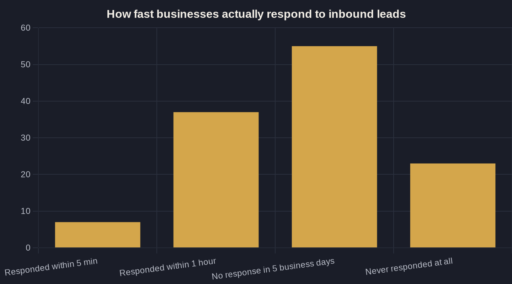

Speed to Lead: Why a 5-Minute Response Beats a Bigger Ad Budget
Before you raise your ad budget, fix how fast you answer the leads that budget already bought. The research on speed to lead is not close.

Key takeaways
- Responding in 5 minutes instead of 30 makes you 100x more likely to make contact and 21x more likely to qualify the lead (MIT/InsideSales.com).
- Slowness is the industry default: only 7% of companies respond within 5 minutes and 23% never respond at all — which makes speed a free competitive edge.
- Slow follow-up can double your cost per booked job on the exact same ad budget; speed to lead is a direct input into ROAS.
- Answer fast AND dial persistently — 93% of converted leads are reached by the 6th call attempt (Velocify).
- Automate instant text acknowledgment plus a 5-minute human callback so your speed to lead never depends on who happens to be free.
Speed to Lead Beats a Bigger Budget Every Time
Most local service owners try to grow by spending more — more on Google Ads, more on a new landing page, more on direct mail. There is a cheaper lever sitting in your inbox right now, and it costs nothing extra to pull. It is called speed to lead: how fast a real human responds when someone raises their hand and asks for help.
Speed to lead is the gap between a prospect submitting a form or calling your office and someone reaching back out. Close that gap to five minutes and you will book more jobs from the exact same ad spend. Leave it at five hours, and you are paying to generate leads that the competitor down the road actually answers.
This post is part of our larger work on marketing ROI for local business. The short version: before you raise your budget, fix the speed at which you answer the leads that budget already bought.
What the Research Says About the First Five Minutes
The most cited number in this field comes from a study Dr. James Oldroyd ran with MIT and InsideSales.com, examining three years of data across six companies — more than 15,000 leads and over 100,000 call attempts. Responding in five minutes instead of thirty made a business 100 times more likely to make contact and 21 times more likely to qualify the lead. Not 20 percent better. One hundred times.
Harvard Business Review found the same pattern at a larger scale. Firms that tried to contact a prospect within an hour were more than 60 times as likely to qualify that lead as companies that waited 24 hours or longer. A separate dataset of 1.25 million leads in the same research showed that contacting within an hour made a firm nearly seven times as likely to have a meaningful conversation with a decision maker.
The math is brutal and consistent: attention decays by the minute. A prospect who filled out your form is, right now, also filling out two competitors' forms. The first real human to call wins the conversation before price ever comes up.
Most of Your Competitors Are Slow — And That Is Your Opening
If speed to lead is so powerful, why doesn't everyone do it? Because almost nobody does. When Drift submitted real demo requests to 433 companies, only 7 percent responded within five minutes, and 55 percent never responded within five business days.
Harvard's audit of 2,241 U.S. companies found the average response time to a web lead was 42 hours, only 37 percent answered within an hour, and 23 percent never responded at all. Read that again: nearly a quarter of businesses pay to generate a lead and then never call it.
That is bad news for them and good news for you. Slowness is the industry default, which means speed to lead is one of the few edges a small local business can take from a bigger, better-funded competitor without spending a dollar more.
Speed to Lead in Owner's Math: The Money You Already Paid For
Here is where speed to lead meets Owner's Math — the practice of tracing what one dollar of marketing actually returns, from impression to booked job to revenue. Every lead you generate has a hard cost: your ad spend divided by the forms and calls it produced. When a lead goes cold, that cost does not disappear. It just stops producing anything.
Say you pay $80 per lead and close one in four when you call fast. That is a $320 cost per booked job. Let your response time slip so you only close one in eight, and your cost per booked job doubles to $640 — same ad budget, half the return. Speed to lead is not a sales nicety; it is a direct input into your return on ad spend.
This is also why slow follow-up hides inside your numbers. The spend looks fine, the lead count looks fine, and the damage only shows up at the bottom line. We cover the full pattern in where marketing money quietly leaks out of a local business.
| Response speed | What the data shows | Source |
|---|---|---|
| Call within 5 min vs. 30 min | 100x more likely to make contact | MIT / InsideSales.com (2007) |
| Call within 5 min vs. 30 min | 21x more likely to qualify the lead | MIT / InsideSales.com (2007) |
| Contact within 1 hr vs. 24+ hrs | 60x more likely to qualify the lead | Harvard Business Review (2011) |
| Contact within 1 hr vs. later | 7x more likely to reach a decision maker | Harvard Business Review (2011) |
| Call within 1 min of the lead | +391% conversion rate | Velocify (2016) |

Why Faster Always Wins: The Decay Curve and Persistence
Speed is not just about the first touch — it is about the first few minutes and the first several attempts. Velocify's analysis of roughly 3.5 million leads found that calling within one minute of receiving a lead lifted conversion by 391 percent, and that 93 percent of leads that eventually converted were reached by the sixth call.
So two things move the needle: answer fast, then be willing to dial more than once. Most owners do neither. They let the lead sit, make one half-hearted call hours later, and write it off as a bad lead. It was usually a good lead with a slow response.
If you are not measuring how fast and how persistently you follow up, you are blind on the metric that quietly decides your win rate. That measurement problem is its own subject — see the attribution gap that hides your best and worst leads.
How to Actually Respond in Five Minutes
You do not need a 20-person call center to win on speed to lead. You need a system that does three things every time, without depending on whether someone happens to be free.
- Instant acknowledgment. The moment a form is submitted, fire an automatic text and email so the prospect knows a human is coming. This buys you minutes and keeps them from booking your competitor first.
- Real human callback inside five minutes. Route new leads to whoever is on the floor with one clear rule: stop what you are doing and call.
- Persistent, logged follow-up. Six attempts over a few days, tracked — not guessed.
This is exactly where automation earns its keep. A simple AI-assisted intake layer can text the lead in seconds, alert your team, and keep dialing until someone connects — see how AI handles speed to lead for local service businesses. The technology is no longer expensive or exotic; it is table stakes for owners who refuse to lose paid leads to a slow phone.
Fix the Five Minutes Before You Touch the Budget
You can spend the next quarter chasing a bigger ad budget, or you can spend next week making sure every lead you already pay for gets a real response in five minutes. One of those costs thousands. The other costs a process change. Speed to lead is the rare growth lever that is both the cheapest and the most reliable.
If you want help wiring this into your own Owner's Math — tracing exactly what faster response is worth in booked jobs and revenue for your specific business — that is the kind of work we do on a call. Bring your numbers, and we will trace the dollar from click to closed job together.
Sources
- MIT / InsideSales.com Lead Response Management Study (Dr. James Oldroyd) — Executive Summary (2007)
- Harvard Business Review — "The Short Life of Online Sales Leads" (Oldroyd, McElheran, Elkington) (2011)
- Velocify — "The Ultimate Contact Strategy" Sales Optimization Study (reported by The National Law Review) (2016)
- Drift — Lead Response Survey (2017)
Want this run on your numbers?
Book a call and we will run the Owner's Math on your business — clear numbers, a straight plan, no pitch. Or read the free Playbook first.